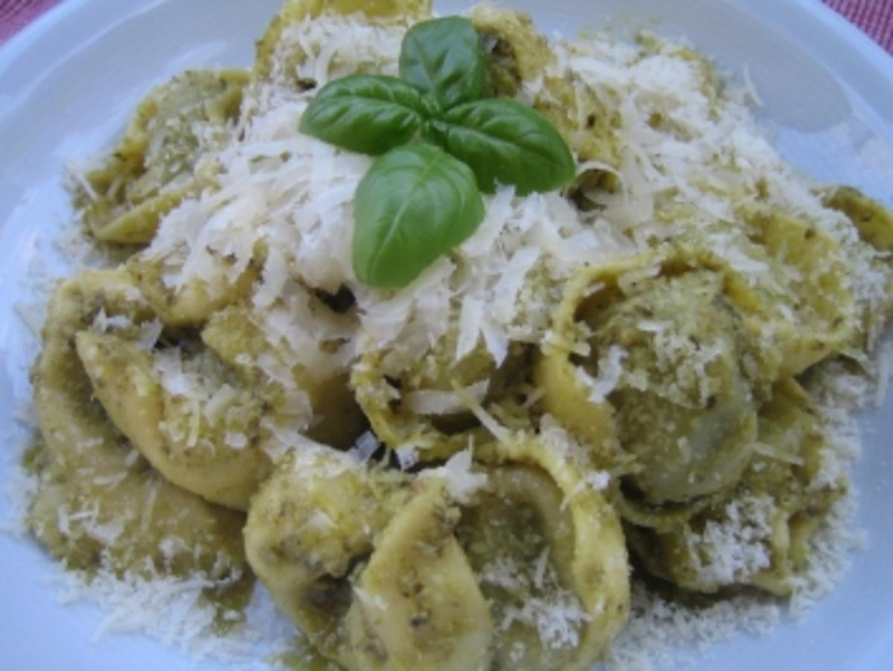

Tortellini mit Pesto

Beschreibung
Ja sind halt Tortellini was soll man sagen
Eig ganz lecker so aber bisschen schäbig
bisschen Abwechslung geht schon eig
Zutaten
- So ne Packung Tortellini, egal von wem und wie
- Gehen auch normale Nudeln, wenn man sich selbst hasst
- Glas Pesto - Ich mag grüne mit Pepperoni am Liebsten
- Knoblauchzehe
- Bisschen Olivenöl
- Evtl. nen Klecks Frischkäse, saure Sahne, nicht saure Sahne oder auch Quark, Skyr, washaltsodaist
Zubereitung
- Tortellini oder Nudeln kochen
- Knoblauch in Olivenöl leicht andünsten
- Zwei EL Pesto dazu, vielleicht auch mehr
- Klecks von weißer Sache nach Wahl dazu
- Teigwaren hinein, durchmischen
- Nach Wunsch mit geriebenem Käse oder Basilikum-Blättern oder was auch immer garnieren
- sorry.
zurück Home